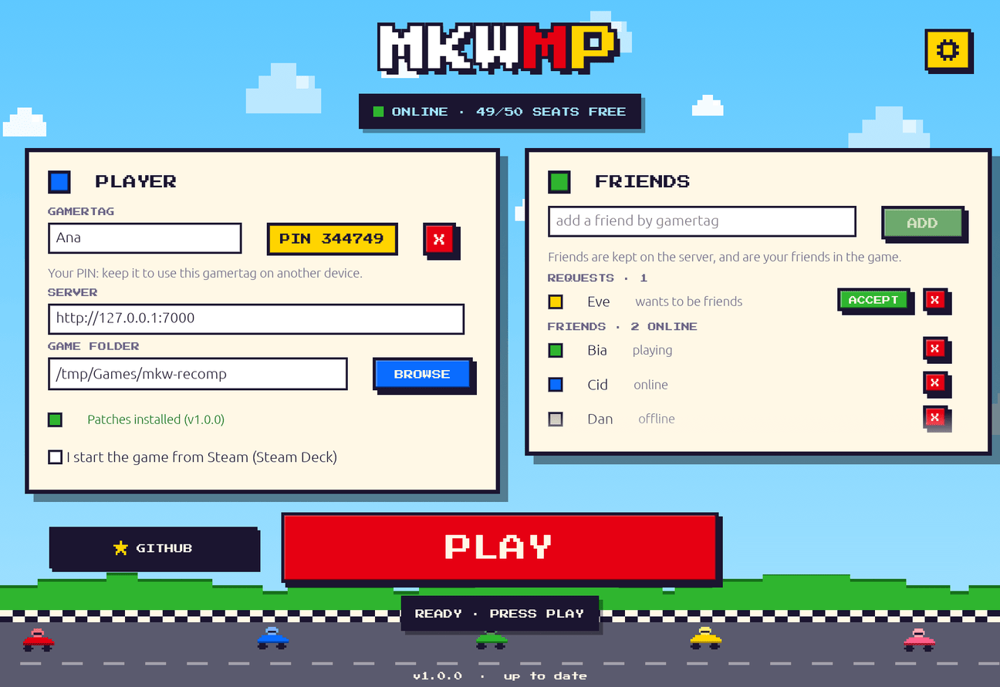
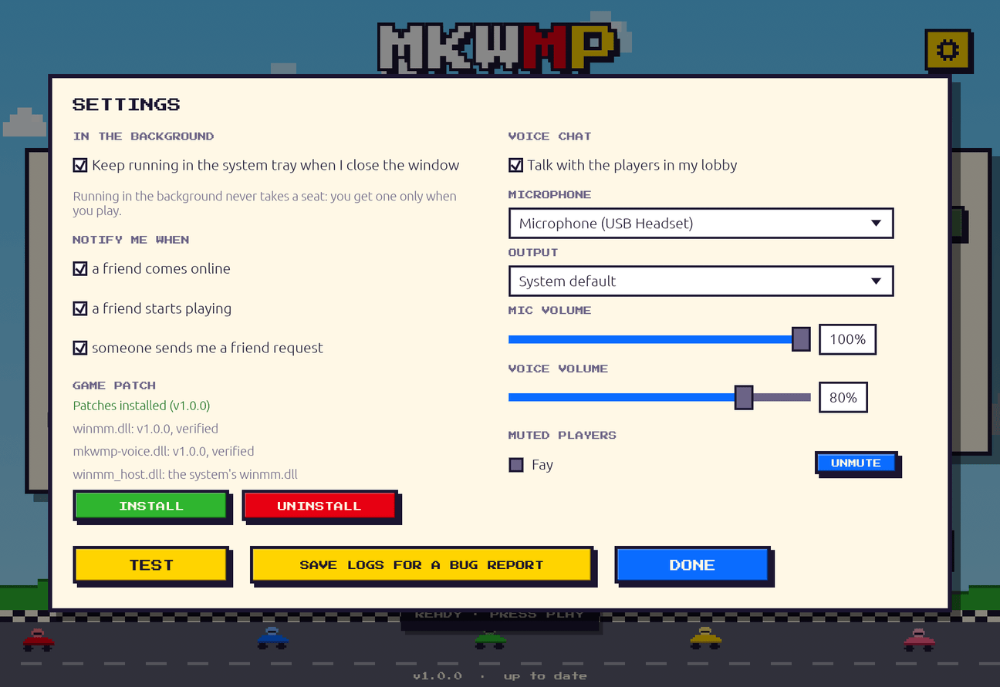

! STATUS
Version 1.0.0 (download). Matchmade races and battles start to finish, friend rooms (join from the friend card or by Room ID), voice chat and camera in friend rooms, and self-hosted servers. On a Steam Deck, one command installs it: see below.
★ THE LAUNCHER
One small app does everything: your gamertag, your friends, the server's free seats, voice chat, and installing, checking and updating the game patch. Close the window and it keeps running in the system tray, with a notification when a friend comes online, starts playing, or sends you a request.


1 PLAY ON THE OFFICIAL SERVER
The official server has 50 seats. You only take a seat while you play; when it's full you wait in a queue and the launcher shows your place in line.
- Install the game and the MKWMP patch: Windows or Steam Deck / SteamOS.
- Open the launcher and confirm you're 18 or older and accept the privacy policy. Type a gamertag and press REGISTER: you get a 6-digit PIN. Keep it: it's how you use the same gamertag on another PC or your Deck. Pick the game folder. The server is already set to the official one (
https://mkw.anarqz.dev). - Add friends by gamertag. They accept (or decline) in their launcher, and then you see each other as playing, online or offline, and you're friends in the game too.
- Press PLAY. The launcher updates itself and the game patch, takes a seat (or queues), and starts the game. Your seat is held until you close the game or press STOP.
- In the game, choose Online Play → Race or Online Play → Battle (1P). Players who pick the same mode are matched together, and new lobbies open as more players arrive. Until you click Online Play, the game behaves exactly like the normal offline game.
FRIENDS
Kept on the server with your gamertag: add by gamertag, they accept or decline. Up to 100 friends. Removing a friend, or deleting your gamertag, removes it on both sides.
GAMERTAGS
3–16 characters: letters, digits, - and _; case doesn't count. Yours on that server, protected by your PIN (stored hashed). Unused for a month, it's deleted with its friends; if the name is still free, the launcher registers it again with your PIN.
SEATS & QUEUE
Having the launcher open doesn't take a seat; PLAY does. A full server queues you in order. If a launcher stops responding, its seat goes to the next player after a minute.
2 INSTALL ON WINDOWS
- Set up mkw-recomp 0.1.15-mkwmp (MKWMP's build of mkw-recomp 0.1.15, with the camera; the official 0.1.15, 0.1.13, 0.1.12 and 0.1.10 also work, without the camera) with your own copy of the game, as the mkw-recomp README describes. MKWMP works with game version 1.0.0 or 1.8.0; players only meet others on the same game version.
- Get the launcher: download
mkwmp-<version>-windows-x64.zipfrom the latest release and unzip it anywhere, for example in Documents. Themkwmpfolder keeps the launcher's settings (client.toml) and logs. - Open
mkwmp-launcher.exe, register a gamertag and pick the game folder. The line under GAME FOLDER says whether the game patch is installed: press INSTALL. It copieswinmm.dll(MKWMP) andmkwmp-voice.dllinto the game folder, copies your system'swinmm.dllthere aswinmm_host.dll, and saves anywinmm.dllalready there aswinmm.dll.bak. The patch is checked against the release's signed checksums. SETTINGS → GAME PATCH → UNINSTALL removes every MKWMP file again. - Play. The launcher keeps itself and the patch up to date. Without the launcher, the game stays offline as normal.
- Optional: the MKWMP mod (mkw-recomp 0.1.15 or 0.1.15-mkwmp; needed for the camera, with game 1.8.0). Unzip
mkwmp-mod.zipfrom the latest release into themodsfolder of mkw-recomp's data folder (you getmods/mkwmp/). On mkw-recomp's start screen open Mods, tick MKWMP, and in its Options confirm you're 18 or older and sign in or register. With the mod enabled, the launcher takes its ownwinmm.dllout of the game folder (the mod wins); you can still use it for your gamertag, friends and PLAY, or start the game from mkw-recomp's start screen. The camera is off until you turn it on (Options → Camera, or the in-game settings' Camera tab) and say yes when the game asks; it shows only in friend rooms, between mutual friends.
Game folder after setup: mkw.exe, mkwgame.dll, SDL3.dll, …, winmm.dll (MKWMP), winmm_host.dll (your system's copy), mkwmp.toml (written by the launcher for the server you play on). Updates to the patch wait until the game is closed.
3 STEAM DECK & STEAMOS
The game runs as the Windows build of mkw-recomp under Proton. The native Linux build can't load the patch. Do the setup in Desktop Mode.
One command (Desktop Mode, in Konsole) installs the newest release to ~/mkwmp, finds your game and Proton 10.0, and adds Mario Kart World (MKWMP) to Steam. Steam closes and opens again while it works:
curl -fsSL https://anarqz.github.io/mkwmp/install.sh | bashThen, in Game Mode, open Mario Kart World (MKWMP): register your gamertag (or enter the PIN of the one you have), press INSTALL under GAME FOLDER if the patch isn't installed yet, and press PLAY. The launcher starts the game through Proton.
Before you run it: put the Windows mkw-recomp 0.1.15-mkwmp build (or the official 0.1.15 / 0.1.13 / 0.1.12 / 0.1.10) with your own game files (version 1.0.0 or 1.8.0) in a folder (for example on the SD card), and install Proton 10.0 from Steam. Proton 11 can't see the controller. The installer backs up shortcuts.vdf first and keeps your client.toml. Options: curl -fsSL https://anarqz.github.io/mkwmp/install.sh | bash -s -- --game /path/to/game.
By hand: download mkwmp-<version>-linux-x64.zip from the latest release, unzip it to ~/mkwmp and open mkwmp-launcher. Then add mkw.exe to Steam as a non-Steam game with Proton 10.0 forced (Properties → Compatibility) and these launch options, and tick "I start the game from Steam" in the launcher:
WINEDLLOVERRIDES="winmm=n,b" GRPC_DNS_RESOLVER=native MKW_MESH_COMPUTE=1 MKW_ASSUME_FOCUS=1 %command% --playThe controller wakes up 20–50 seconds after the game starts; MKWMP fixes up Steam Input under Proton by itself. Both a Steam Deck and a ROG Ally X running SteamOS have been tested.
4 HOST YOUR OWN SERVER
Play with your friends on your own server. A PC is enough: download mkwmp-server-x86_64-windows.exe (or the Linux one) from the releases and run it. On the first run it asks for the address your friends reach you at, then sets everything up by itself.
On a Linux server you can use Docker Compose instead:
git clone https://github.com/anarqz/mkwmp && cd mkwmp
cp .env.example .env # set MKWMP_PUBLIC_IP
docker compose up -d --buildThen everyone sets the launcher's SERVER to http://<your IP>:7000, registers a gamertag there and presses PLAY.
WHAT RUNS
The seat server (gamertags, friends, seats and queue) and the lobby (matchmaking, Gamesync, TURN relay). All in one program; the first start creates every key and the lobby's certificate.
PORTS
Open TCP 7000, 8905, 8906 and UDP 3478, 10025, 49152–49407. For friends over the internet, forward them on your router.
SQLITE
Gamertags, hashed PINs and friends live in one SQLite file in the server's data folder. Seats are in memory: after a restart, launchers rejoin on their own.
Needs rc.2 or later, for the server and for every player: the rc.2 launcher and game patch trust each server's own certificate (rc.1 only reaches the official server). Launchers update themselves when you press PLAY. Over plain http://, PINs travel unencrypted: fine on a LAN; for a public server use HTTPS (see the hosting guide).
? FAQ
- Is this official?
- No. MKWMP is an unofficial community project, not affiliated with or endorsed by Nintendo. You need your own copy of the game.
- Why a queue?
- Each server has a fixed number of seats so its lobby stays responsive. A seat is yours from PLAY until you close the game or press STOP.
- Can someone skip the queue?
- No. The lobby only lets in games holding a ticket signed by the seat server, and checks that the ticket's seat is still held.
- Where are my friends and gamertag stored?
- On the server you play on, in its database: your gamertag, your PIN (hashed, never in plain text) and your friend list. SETTINGS → PRIVACY → DELETE MY ACCOUNT removes all of it. See the privacy policy.
- Someone was abusive in voice chat.
- Mute them from their menu in the game's lobby. To report them, open SETTINGS → REPORT VOICE ABUSE (or press REPORT next to the muted player), pick what happened and send. The server's host reviews reports. You can have one report waiting at a time.
- I forgot my PIN.
- The server's admin can reset it.
§ PRIVACY POLICY
This policy is for the official server (mkw.anarqz.dev), run as a hobby by the MKWMP maintainer. It is not run by Nintendo. A server someone else hosts is run by that person, and their own rules apply. Last updated: 19 November 2026.
- Who can use it
- Only people 18 or older. The launcher (or the MKWMP mod) asks you to confirm it before it registers a gamertag, signs in or plays. If you're under 18, please don't use the official server.
- What the server keeps
- In its database: your gamertag, a hash of your PIN (Argon2id; the PIN itself is never stored), when you registered and when you last used it, your friends and friend requests, and any voice-chat or camera report you file (who you reported, the reason, what you wrote, when, and the host's note once it's reviewed). We don't ask for your email, real name, age or any payment details, and there are no ads, trackers or analytics.
- What it only holds while it runs
- Seats and the queue, who's online, the game lobbies, and rate-limit counters keyed by your IP address. These live in memory and are gone when the server restarts.
- Logs
- The server's logs can contain your gamertag, the game's user id and sometimes your IP address. They're used to fix problems and look into reports, and are deleted after 7 days.
- Voice chat
- Voice chat works only in friend rooms (ONLINE → FRIENDS), not in matchmade lobbies. Your voice is relayed live to the players in your room, only while voice chat is on. The server forwards the audio packets without decoding them and never records or stores them. Your mute list stays on your computer.
- Camera
- The camera needs the MKWMP mod and is off until you turn it on in its settings and say yes when the game asks. It works only in a friend room: a small picture (256×144, up to 10 frames a second) is relayed live to the players in that room who are your mutual friends (each of you is on the other's friend list) and who chose to see cameras; each player sees at most 4. Muting a player hides their camera and stops yours going to them. The server forwards the pictures without decoding them and never records or stores them.
- Who sees what
- Your friends see whether you're playing, online or offline. Players in your lobby see your gamertag. In a friend room they hear you, and your mutual friends there can see your camera if it's on. The game connects the players in a lobby to each other, directly or through the server's relay, so they may also see your IP address, as in any online game. Players can look up whether a gamertag is registered. Only the server's host sees reports.
- How long it's kept
- A gamertag unused for 30 days is deleted, with its friends and requests. Reports are deleted 90 days after they're filed, reviewed or not. Logs are kept 7 days. The copy of the database made when the server is updated (a backup) is deleted after 7 days.
- Your choices
- SETTINGS → PRIVACY → DELETE MY ACCOUNT (or the X next to your PIN) deletes your gamertag, PIN, friends and the reports you filed, right away (a backup copy may hold them for up to 7 more days). It needs your PIN, so nobody else can do it for you. You can withdraw a report while it waits for review, and untick the 18+ box to stop the launcher signing in or contacting the server. Reports other players filed about you are kept until they expire, so the host can review them.
- Who else is involved
- The server is a virtual machine at Vultr in São Paulo, Brazil. The launcher reaches it through Cloudflare, which handles that connection. Game lobbies, voice and camera connect to the machine directly. Updates, this website and bug reports are on GitHub. Each of these companies has its own privacy policy.
- Bug reports
- SAVE LOGS FOR A BUG REPORT makes a zip on your computer (your PIN and tickets are left out). It's only shared if you attach it to a GitHub issue yourself, and issues are public.
- Changes and questions
- Changes to this policy are dated here and kept in the project's history on GitHub. For questions, open an issue, without personal details in it.